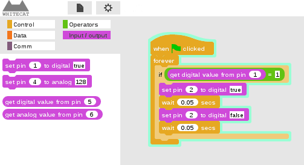
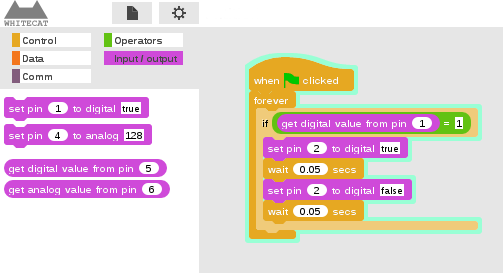

What is it?
WhiteCat is both an open hardware platform and a free blocks-based graphical programming language.
 

It is white as in an empty canvas, ready for you to build whatever you can imagine.
What's new about it?
The WhiteCat board can be programmed in a live, dynamic, blocks-based language. Not just interfaced, but really programmed. It works just as you expect it to.
WhiteCat programs are automagically deployed in real time to the board, meaning you can just unplug it at anytime. No compilation, no file transferring. Just unplug the board and whatever was running in the blocks environment will keep running in the board.